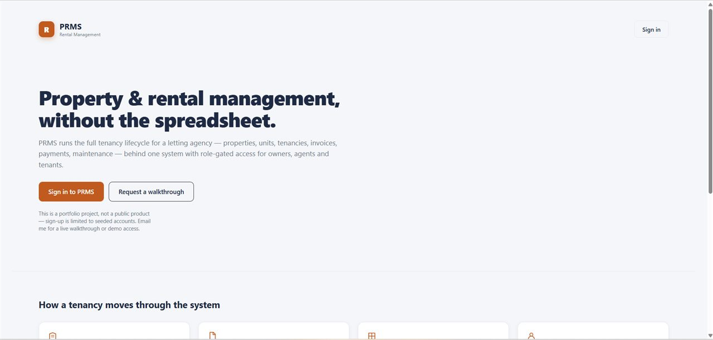

Property & Rental Management System
Multi-role platform for letting agencies · Laravel + Angular · 2026
REMS covers the full tenancy lifecycle: an owner registers a property, units are listed and approved, an agent drafts a tenancy, a tenant moves in, rent is invoiced on a billing cycle, payments arrive and get reconciled against those invoices, and deposits are refunded when the tenancy ends. Maintenance tickets, vacate notices and agent commissions run alongside it — around twenty REST resources, all behind token auth with role-gated permissions.
The domain is unforgiving in two specific ways. A unit let to two tenants at once is a legal problem, not a bug report. And money that doesn't reconcile is worse than no system at all.
Making double-letting impossible rather than unlikely
The obvious approach is to check for an existing active tenancy before activating a new one. That check passes for both requests when two agents activate at the same moment. So I moved the rule into the database:
CREATE UNIQUE INDEX uniq_active_tenancy_per_unit ON tenancies (unit_id) WHERE status = 'active';
A partial unique index lets a unit accumulate any number of draft and ended tenancies while permitting exactly one active row. The second request now fails at the storage layer no matter how the two interleave; the controller catches it and returns a clean 422. The invariant holds even if someone later writes a script that bypasses my code entirely.
Payment allocation got the same treatment in application logic: an amount is rejected unless it fits within both the payment's unallocated balance and the invoice's outstanding balance. Invoice status is then derived from the sum of allocations inside the same transaction — and when an allocation moves between invoices, both get recalculated.
One decision I'd flag as deliberate: this backend uses Laravel's query builder
throughout rather than Eloquent, with only User and
Role as models. I wanted explicit SQL and no accidental N+1s or
lazy-loading surprises. The cost is real — no relationships, no casts, and
validation rules repeated between create and update — and it's a trade I'd
revisit on a larger team.